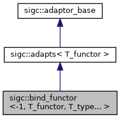

Adaptor that binds argument(s) to the wrapped functor. More...
#include <sigc++/adaptors/bind.h>
Inheritance diagram for sigc::bind_functor<-1, T_functor, T_type... >:

Public Member Functions | |
| bind_functor (type_trait_take_t< T_functor > func, type_trait_take_t< T_type >...bound) | |
| Constructs a bind_functor object that binds an argument to the passed functor. More... | |
| template<typename... T_arg> | |
| decltype(auto) | operator() (T_arg&&...arg) |
| Invokes the wrapped functor passing on the arguments. More... | |
 Public Member Functions inherited from sigc::adapts< T_functor > Public Member Functions inherited from sigc::adapts< T_functor > | |
| adapts (const T_functor& functor) | |
| Constructs an adaptor that wraps the passed functor. More... | |
Public Attributes | |
| std::tuple< bound_argument< T_type >... > | bound_ |
| The argument bound to the functor. More... | |
| Public Attributes inherited from sigc::adapts< T_functor > | |
| adaptor_type | functor_ |
| Adaptor that is invoked from operator()(). More... | |
Detailed Description
template<typename T_functor, typename... T_type>
struct sigc::bind_functor<-1, T_functor, T_type... >
Adaptor that binds argument(s) to the wrapped functor.
This template specialization fixes the last argument(s) of the wrapped functor.
Constructor & Destructor Documentation
template <typename T_functor , typename... T_type>
|
inline |
Constructs a bind_functor object that binds an argument to the passed functor.
- Parameters
-
func Functor to invoke from operator()(). bound Arguments to bind to the functor.
Member Function Documentation
template <typename T_functor , typename... T_type>
template <typename... T_arg>
|
inline |
Invokes the wrapped functor passing on the arguments.
bound_ is passed as the next argument.
- Parameters
-
arg Arguments to be passed on to the functor.
- Returns
- The return value of the functor invocation.
Member Data Documentation
template <typename T_functor , typename... T_type>
| std::tuple<bound_argument<T_type>...> sigc::bind_functor<-1, T_functor, T_type... >::bound_ |
The argument bound to the functor.